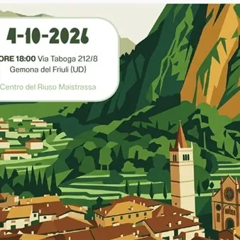

dom 4 ott · dalle 18:00
Riflessioni sull'Enciclica “Laudato Sii”
In occasione della giornata di San Francesco del 4 ottobre, Maistrassà ha organizzato una serata di approfondimento sull'Enciclica “Laudato Sii” di Jorge Bergoglio (papa Francesco) aperta a tutti. Vale la pena rileggere questo documento a distanza di 11 anni, perché costituisce…
 Indicazioni
Indicazioni
- Costi e prenotazioni
- Costo non indicato · Prenotazione non indicata
- Programma
- Programma da verificare. Apri la fonte ufficiale per orari e possibili aggiornamenti.
- In caso di maltempo
- Nessuna indicazione specifica pubblicata.
- Note
- Acquisito automaticamente dalla fonte.
L’EVENTO
Descrizione completa
In occasione della giornata di San Francesco del 4 ottobre , Maistrassà ha organizzato una serata di approfondimento sull'Enciclica “Laudato Sii” di Jorge Bergoglio (papa Francesco) aperta a tutti. Vale la pena rileggere questo documento a distanza di 11 anni, perché costituisce la “summa”, vasta e molto informata, del pensiero critico della Chiesa cattolica sui problemi del mondo attuale. Papa Francesco rivolge alle persone e alle istituzioni un richiamo forte e chiaro al dovere morale di prendersi cura del “creato”, in uno spirito di fratellanza universale, unificando nel concetto di “creato” sia la natura che l'uomo, gli oceani e le disuguaglianze sociali, la CO2 e la povertà, come fenomeni tra loro indissolubilmente legati in una visione di ecologia integrale. Il pensiero del compianto Alexander Langer sulla necessità di una conversione ecologica farà parte della serata in quanto strettamente connesso con l’Enciclica. A undici anni dall'Enciclica Laudato si’, il richiamo alla responsabilità verso il nostro pianeta e verso gli ultimi risuona con forza. Oggi più che mai abbiamo bisogno di comunità che dialogano e si impegnano. Un incontro per condividere idee, esperienze e nuove strade di impegno civile.
Programma
18.00 Saluti e presentazione serata
Maria Teresa Declara, Presidente del Centro di Riuso Maistrassâ
18:15 Interventi Il cuore della Laudato si’ e dopo 11 anni cosa resta, Demetrio Spanti Docente e Diacono Permanente. Impegnato nel riconoscimento dei beni comuni e dei diritti degli enti naturali La conversione ecologica in Alexander Langer e l’Enciclica, Sandro Cargnelutti, Presidente di Legambiente FVG Ulteriori interventi dal pubblico: spazio al dibattito e alle voci dei partecipanti
19.15 Conclusioni conviviali
Gli interventi musicali di Jacopo Marini faranno da cornice alla serata, che si concluderà con un aperitivo insieme.
Modera Alberto Antonelli, membro del direttivo di Maistrassâ
Info e contatti
associazione@maistrassa.it | +39 370 329 0637
IL PROGRAMMA
Programma e orari
Appuntamenti raccolti dalle fonti elencate. Dove manca un orario, non è ancora disponibile in questa scheda.
Programma pubblicato
- 18.00 Saluti e presentazione serata
- 18:15 Interventi
- 19.15 Conclusioni conviviali
INFORMAZIONI UTILI
Prima di partire
- Controllare la fonte prima di partire.
ORGANIZZAZIONE